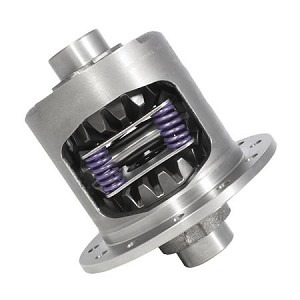
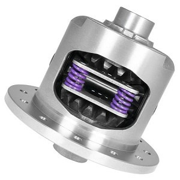
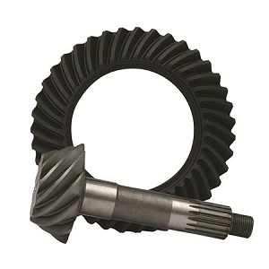

YDGGM9.5-33-1
Yukon Dura Grip Positraction for GM 9.5” with 33 Spline Axles
Heavy-duty Yukon Dura Grip limited-slip differential/positraction unit for GM 9.5-inch axle applications with 33-spline axle shafts.
View DetailsAsk on WhatsApp
CT Automotive Specialists helps classic car owners, collectors, restorers, and mechanics find quality parts and repair solutions for antique and vintage vehicles.

Heavy-duty Yukon Dura Grip limited-slip differential/positraction unit for GM 9.5-inch axle applications with 33-spline axle shafts.

Yukon Dura Grip positraction differential for GM 12-bolt passenger car rear ends with 30-spline axles and 3.08 to 3.90 gear ratio applications.

USA Standard Gear ring and pinion set for GM Chevy 55P differential in a 3.08 gear ratio.
Inspection, repair guidance, and rebuild service for antique and classic transmissions.
Hands-on help for older engines that require patience and vintage system knowledge.
Specialty driveline, differential, engine, and hard-to-find parts for classic vehicles.